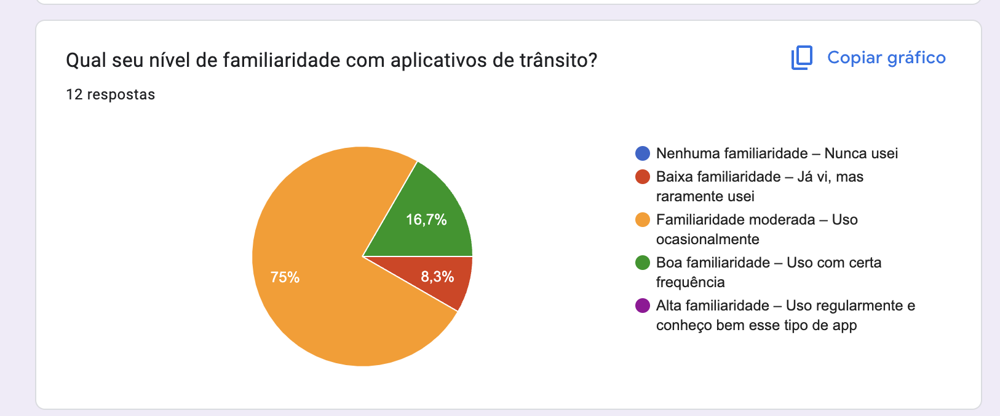
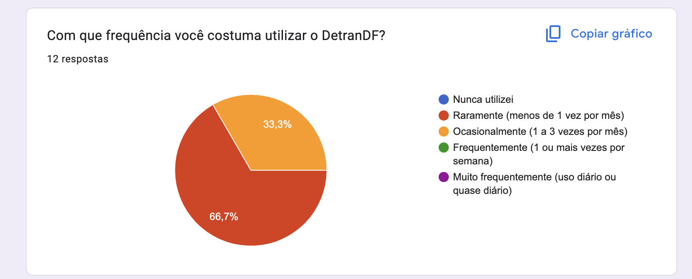
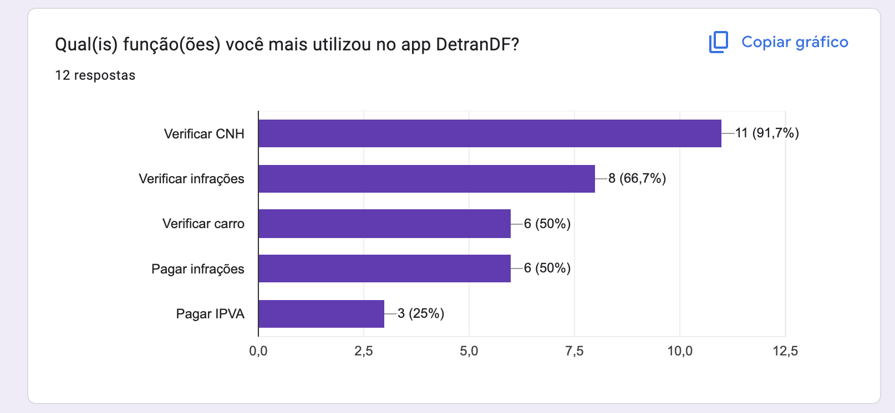
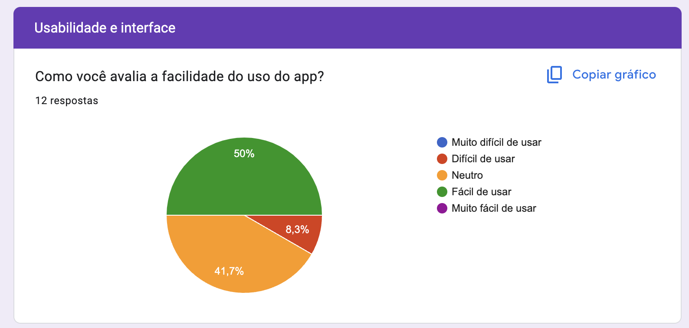
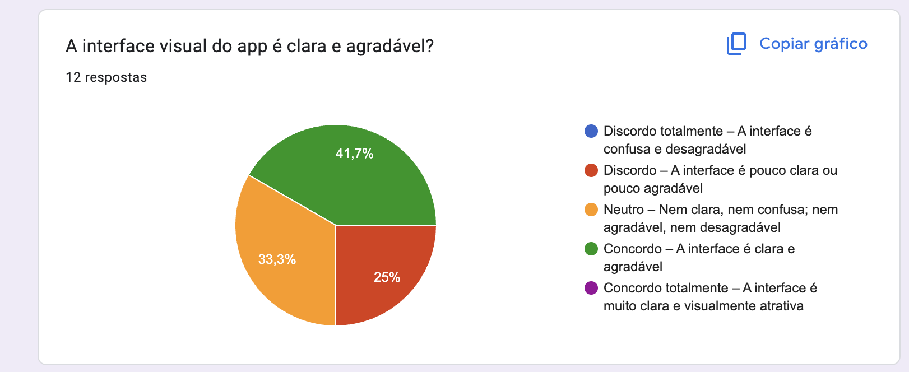
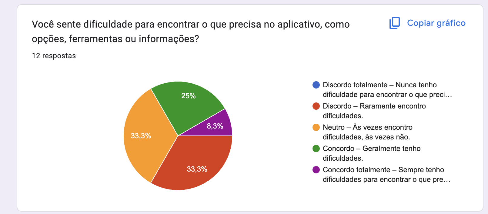
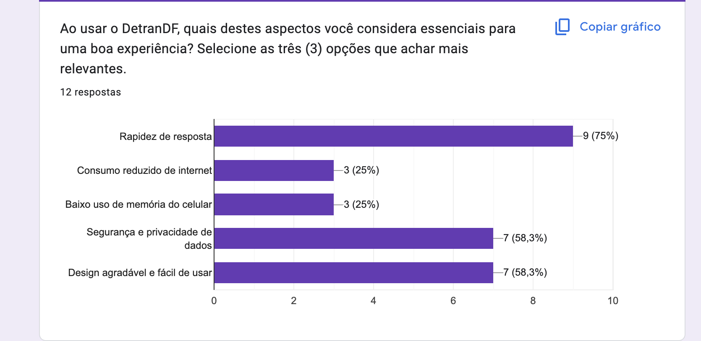

Perfil do Usuário
Introdução
Parte importante do desenvolvimento do projeto é definir um perfil do usuário, sendo assim possível entender mais sobre os usuários que utilizam o sistema, deve-se ressaltar diversas características tais como: interesse, experiência, faixa etária, conhecimento prévio etc.
Metodologia
Foi elaborado um questionário no Google Forms de 22 questões a respeito dos usuaŕios, incluindo questões demográficas e relacionadas com o uso aplicativo, além disso foi elaborado o Termo de Consentimento Livre e Esclarecido, de acordo com a Resolução Nº 466 de 12 de Dezembro de 2012.
Resultados do questionário
Em relação às perguntas temos que na primeira pergunta Você já utilizou o aplicativo DetranDF?, temos os resultados na representação gráfica presente na Figura 1. Podemos notar que, cerca de 60 por cento da amostra utiliza o DetranDF.

Figura 1 – Gráfico com o percentual de respostas da questão 1
Fonte: Retirada da página de resultados do Google Forms
Na segunda pergunta Você se encaixa e, algum desses perfis? Mais da metade, cerca de sessenta e seis por cento se encaixa no usuário com comum com CNH, como mostra a Figura 2.

Figura 2 – Gráfico com o percentual de respostas da questão 2
Fonte: Retirada da página de resultados do Google Forms
Agora na Figura 3 temos Qual sua faixa etária? Que mostra que mais de 66 por cento da amostra é está entre 18-25 anos de idade.

Figura 3 – Gráfico com o percentual de respostas da questão 3
Fonte: Retirada da página de resultados do Google Forms
Agora na Figura 4 temos Com que gênero você se identifica? Que mostra que 50% são homens e 50% são mulheres.

Figura 4 – Gráfico com o percentual de respostas da questão 4
Fonte: Retirada da página de resultados do Google Forms
A quinta pergunta : Qual seu nível de familiaridade com aplicativos de trânsito? 75% da amostra indicou que tem familiaridade moderada(Figura 5)

Figura 5 – Gráfico com o percentual de respostas da questão 5
Fonte: Retirada da página de resultados do Google Forms
A sexta pergunta : Com que freqência você costuma utilizar o DetranDF? 66% da amostra indicou que usa raramente(Figura 6)

Figura 6 – Gráfico com o percentual de respostas da questão 6
Fonte: Retirada da página de resultados do Google Forms
A sétima pergunta : Como você conheceu o aplicativo DetranDF? 58% da amostra conheceu na auto-escola e também em sites oficiais(Figura 7)

Figura 7 – Gráfico com o percentual de respostas da questão 7
Fonte: Retirada da página de resultados do Google Forms
A oitava pergunta : Qual(is) função(ões) você mais utilizou no app DetranDF? 91% da amostra usa para verificar a CNH(Figura 8)

Figura 8 – Gráfico com o percentual de respostas da questão 8
Fonte: Retirada da página de resultados do Google Forms
A nona pergunta : O que mais te motivou a baixar ou utilizar o aplicativo? As respostas estão na imagem seguinte:(Figura 9)

Figura 9 – Gráfico com o percentual de respostas da questão 9
Fonte: Retirada da página de resultados do Google Forms
A décima pergunta : Quais novas funcionalidades você gostaria de ver no app? As respostas estão na imagem seguinte:(Figura 10)

Figura 10 – Gráfico com o percentual de respostas da questão 10
Fonte: Retirada da página de resultados do Google Forms
A pergunta 11: Como você avalia a facilidade do uso do app? 50% da amostra indicou que é fácil de usar(Figura 11)

Figura 11 – Gráfico com o percentual de respostas da questão 11
Fonte: Retirada da página de resultados do Google Forms
A pergunta 12: A interface visual do app é clara e agradável? 41% da amostra concordou com a afirmação(Figura 12)

Figura 12 – Gráfico com o percentual de respostas da questão 12
Fonte: Retirada da página de resultados do Google Forms
A pergunta 13: Você sente dificuldade para encontrar o que precisa no aplicativo, como opções, ferramentas ou informações? 33% da amostra indicaram neutro e discordo(Figura 13)

Figura 13 – Gráfico com o percentual de respostas da questão 13
Fonte: Retirada da página de resultados do Google Forms
A pergunta 14: Caso tenha dificuldades no uso do aplicativo e queira detalhar melhor suas dificuldades, informe aqui. A resposta está na imagem seguinte:(Figura 14)

Figura 14 – Gráfico com o percentual de respostas da questão 14
Fonte: Retirada da página de resultados do Google Forms
A pergunta 15: Ao usar o DetranDF, quais destes aspectos você considera essenciais para uma boa experiência? Selecione as três (3) opções que achar mais relevantes. 75% indicou rapidez da resposta(Figura 15)

Figura 15 – Gráfico com o percentual de respostas da questão 15
Fonte: Retirada da página de resultados do Google Forms
A pergunta 16: Você sente que seus dados estão protegidos ao usar o app? 66% concordou com a afirmação(Figura 16)

Figura 16 – Gráfico com o percentual de respostas da questão 16
Fonte: Retirada da página de resultados do Google Forms
A pergunta 17: Por favor, explique o que mais contribui para a sua percepção de segurança (ou insegurança) no app As respostas estão na imagem seguinte:(Figura 17)

Figura 17 – Gráfico com o percentual de respostas da questão 17
Fonte: Retirada da página de resultados do Google Forms
A pergunta 18: Com que frequência você enfrenta falhas técnicas ao usar o aplicativo? 50% indicou raramente(Figura 18)

Figura 18 – Gráfico com o percentual de respostas da questão 18
Fonte: Retirada da página de resultados do Google Forms
A pergunta 19: Se você indicou que já enfrentou falhas técnicas (por exemplo, escolher 'Às vezes', 'Frequentemente' ou 'Sempre'), por favor, conte-nos mais: descreva o que aconteceu e como essa situação afetou o uso do aplicativo. As respostas estão na imagem seguinte:(Figura 19)

Figura 19 – Gráfico com o percentual de respostas da questão 19
Fonte: Retirada da página de resultados do Google Forms
A pergunta 20: Você considera o aplicativo útil para gerenciar CNH, carro e pagamento de infrações? 58% indicou que concorda(Figura 20)

Figura 20 – Gráfico com o percentual de respostas da questão 20
Fonte: Retirada da página de resultados do Google Forms
A pergunta 21: O que te faria usar o aplicativo com mais frequência? As respostas estão na imagem seguinte:(Figura 21)

Figura 21 – Gráfico com o percentual de respostas da questão 21
Fonte: Retirada da página de resultados do Google Forms
A pergunta 22: Avalie o aplicativo, considerando sua utilidade, funcionamento e aparência (quanto mais estrelas melhor): A avaliação geral foi 3.58 de 5(Figura 22)

Figura 22 – Gráfico com o percentual de respostas da questão 22
Fonte: Retirada da página de resultados do Google Forms
Conclusão
Como os resultados do questionário apontam, o perfil do usuário tem como perfil pessoas com idade entre 18 anos e 50 anos, com CNH. Além disso foi identificado que os usuários desse aplicativo não usam o app com muita frequência, apenas para fazer consultas ocasionais.
Referências
Resolução CNS nº 466/2012. https://bvsms.saude.gov.br/bvs/saudelegis/cns/2013/res0466_12_12_2012.html acesso feito em 23 de Abril de 2025.
Questionário de Elicitação de Requisitos - Aplicativo Guardiões da Saúde (UnB). https://docs.google.com/forms/d/e/1FAIpQLSd9TjbIRZfV55i_vCmdQV-5BMj1TRb05PlkTeWcLJ6PPrCJuw/viewform acesso feito em 23 de Abril de 2025.
Histórico de versão
| Versão | Data | Descrição | Autor | Revisor |
|---|---|---|---|---|
| 1.0 | 23/04/2025 | Inicialização da página | Gabriel Dantas | Giovana Barbosa |